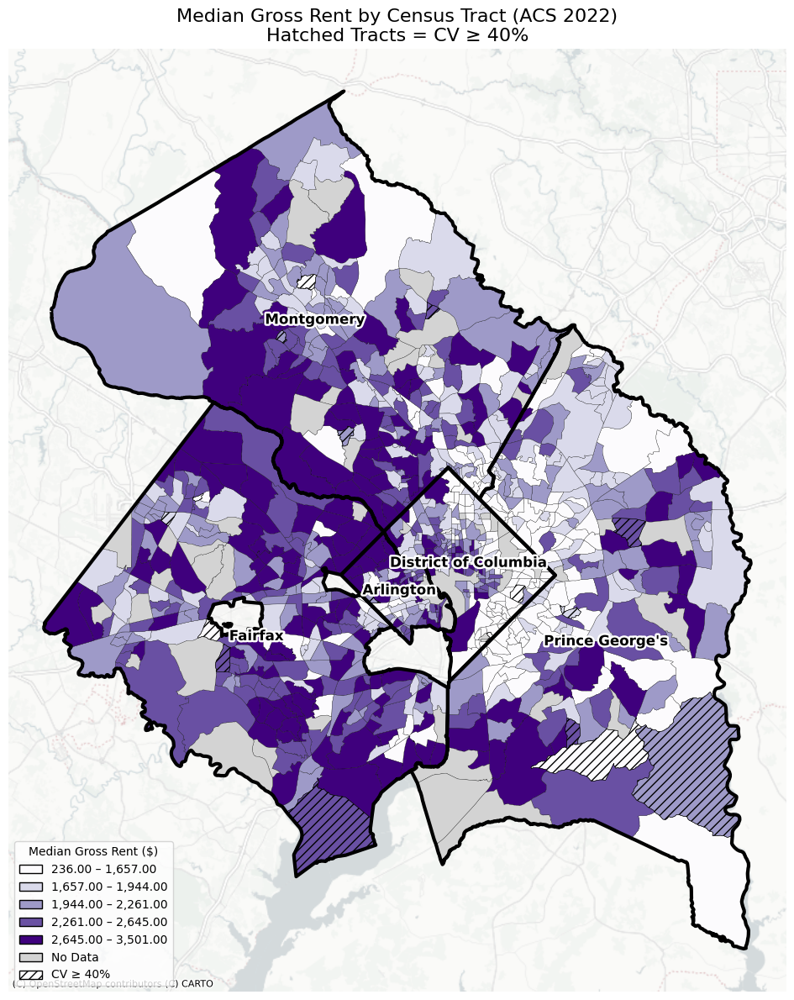
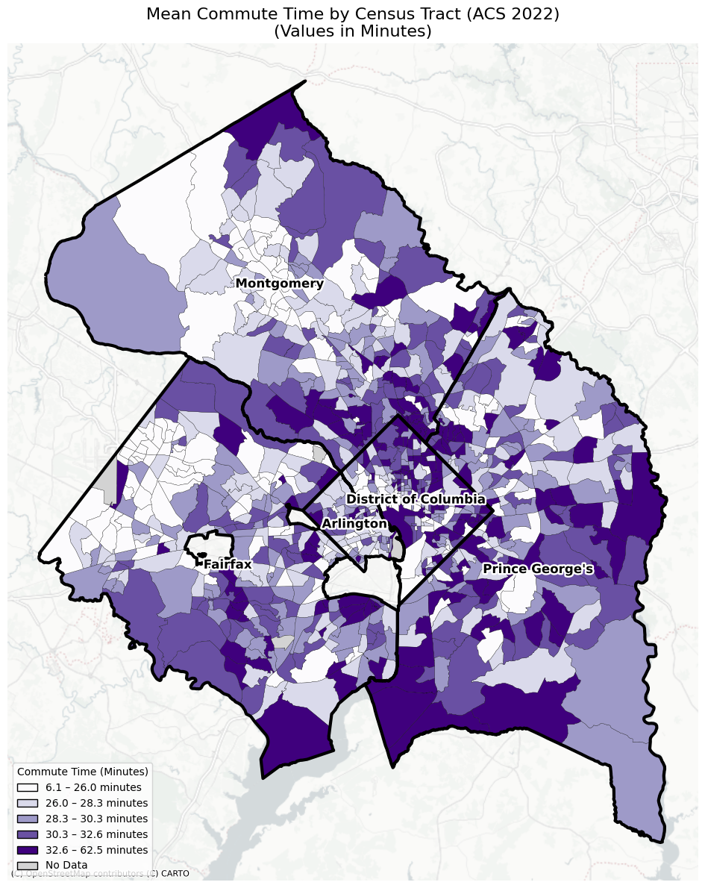

Author: Habib Gul Ahmadzai | Course: Command-Line GIS (Bloustein School of Planning and Public Policy, Rutgers University, Fall 2025)
The project analyzes the spatial distribution of housing affordability and commuting time in the Washington, DC-Maryland-Virginia (DMV) area, with census tract-level American Community Survey (ACS) 2022. Cost of housing and cost of commute are major elements of daily accessibility and quality of life, and this distribution may indicate significant inequalities between neighborhoods.
The use of both static and interactive maps in this project has enabled the creation of visualizations of how median The gross rent and mean commute time differ in census tracts, while emphasizing regions for missing or uncertain estimates. The interactive web map enables the user to view these patterns dynamically to compare layers and examine tract-level information via Hover tooltips. Overall, the graphs above enable a geographic analysis of housing and transportation issues in the DMV area.
Hatched tracts indicate low-confidence estimates where the coefficient of variation (CV) is 40% or higher. Missing data are shown in gray.
Mean one-way commute time in minutes. Missing data are shown in gray.
Left: Median Gross Rent by census tract. Right: Mean Commute Time by census tract.
.png)
The interactive map below allows users to explore spatial patterns of housing cost and commute burden across the DMV region. Users can toggle between median gross rent and mean commute time layers, and hover over individual census tracts to view detailed information including tract ID, median rent, median household income, and mean commute time. County boundaries are displayed with thick outlines and labels to provide geographic context.
Or view it as a separate web page: dmv_interactive.html